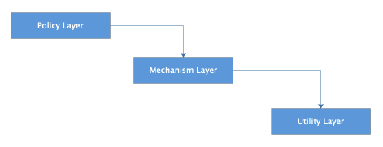
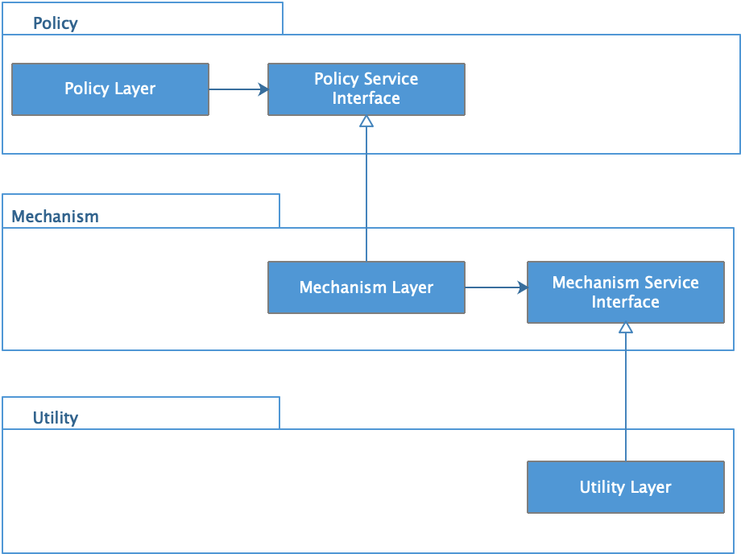
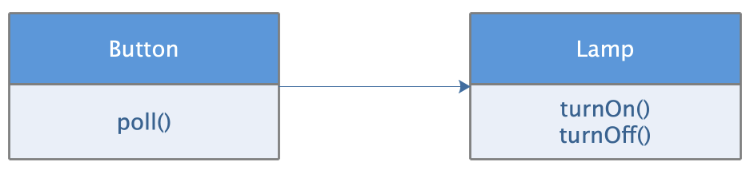
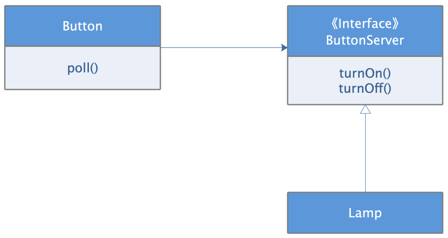

- 00 开篇词 掌握软件开发技术的第一性原理.md
- 01 程序运行原理：程序是如何运行又是如何崩溃的？.md
- 02 数据结构原理：Hash表的时间复杂度为什么是O(1)？.md
- 03 Java虚拟机原理：JVM为什么被称为机器（machine）？.md
- 04 网络编程原理：一个字符的互联网之旅.md
- 05 文件系统原理：如何用1分钟遍历一个100TB的文件？.md
- 06 数据库原理：为什么PrepareStatement性能更好更安全？.md
- 07 答疑 Java Web程序的运行时环境到底是怎样的？.md
- 07 编程语言原理：面向对象编程是编程的终极形态吗？.md
- 08 软件设计的方法论：软件为什么要建模？.md
- 09 软件设计实践：如何使用UML完成一个设计文档？.md
- 10 软件设计的目的：糟糕的程序员比优秀的程序员差在哪里？.md
- 11 软件设计的开闭原则：如何不修改代码却能实现需求变更？.md
- 12 软件设计的依赖倒置原则：如何不依赖代码却可以复用它的功能？.md
- 13 软件设计的里氏替换原则：正方形可以继承长方形吗？.md
- 14 软件设计的单一职责原则：为什么说一个类文件打开最好不要超过一屏？.md
- 15 软件设计的接口隔离原则：如何对类的调用者隐藏类的公有方法？.md
- 16 设计模式基础：不会灵活应用设计模式，你就没有掌握面向对象编程.md
- 17 设计模式应用：编程框架中的设计模式.md
- 18 反应式编程框架设计：如何使程序调用不阻塞等待，立即响应？.md
- 19 组件设计原则：组件的边界在哪里？.md
- 20 答疑 对于设计模式而言，场景到底有多重要？.md
- 20 领域驱动设计：35岁的程序员应该写什么样的代码？.md
- 21 分布式架构：如何应对高并发的用户请求.md
- 22 缓存架构：如何减少不必要的计算？.md
- 23 异步架构：如何避免互相依赖的系统间耦合？.md
- 24 负载均衡架构：如何用10行代码实现一个负载均衡服务？.md
- 25 数据存储架构：如何改善系统的数据存储能力？.md
- 26 搜索引擎架构：如何瞬间完成海量数据检索？.md
- 27 微服务架构：微服务究竟是灵丹还是毒药？.md
- 28 高性能架构：除了代码，你还可以在哪些地方优化性能？.md
- 29 高可用架构：我们为什么感觉不到淘宝应用升级时的停机？.md
- 30 安全性架构：为什么说用户密码泄漏是程序员的锅？.md
- 31 大数据架构：大数据技术架构的思想和原理是什么？.md
- 32 AI与物联网架构：从智能引擎到物联网平台.md
- 33 区块链技术架构：区块链到底能做什么？.md
- 33 答疑 互联网需要解决的技术问题是什么？.md
- 34 技术修炼之道：同样工作十几年，为什么有的人成为大厂架构师，有的人失业？.md
- 35 技术进阶之道：你和这个星球最顶级的程序员差几个等级？.md
- 36 技术落地之道：你真的知道自己要解决的问题是什么吗？.md
- 37 技术沟通之道：如何解决问题？.md
- 38 技术管理之道：你真的要转管理吗？.md
- 38 答疑 工作中的交往和沟通，都有哪些小技巧呢？.md
- 加餐 软件设计文档示例模板.md
- 结束语 期待未来的你，成为优秀的软件架构师.md
12 软件设计的依赖倒置原则：如何不依赖代码却可以复用它的功能？
在软件开发过程中，我们经常会使用各种编程框架。如果你使用的是Java，那么你会比较熟悉Spring、MyBatis等。事实上，Tomcat、Jetty这类Web容器也可以归类为框架。框架的一个特点是，当开发者使用框架开发一个应用程序时，无需在程序中调用框架的代码，就可以使用框架的功能特性。比如程序不需要调用Spring的代码，就可以使用Spring的依赖注入，MVC这些特性，开发出低耦合、高内聚的应用代码。我们的程序更不需要调用Tomcat的代码，就可以监听HTTP协议端口，处理HTTP请求。
这些框架我们每天都在使用，已经司空见惯，所以觉得这种实现理所当然，但是我们停下好好想一想，难道不觉得这很神奇吗？我们自己也写代码，能够做到让其他工程师不调用我们的代码就可以使用我们的代码的功能特性吗？就我观察，大多数开发者是做不到的。那么Spring、Tomcat这些框架是如何做到的呢？
依赖倒置原则
我们看下Spring、Tomcat这些框架设计的核心关键点，也就是面向对象的基本设计原则之一：依赖倒置原则。
依赖倒置原则是这样的：
- 高层模块不应该依赖低层模块，二者都应该依赖抽象。
- 抽象不应该依赖具体实现，具体实现应该依赖抽象。
软件分层设计已经是软件开发者的共识。事实上，最早引入软件分层设计，正是为了建立清晰的软件分层关系，便于高层模块依赖低层模块。一般的应用程序中，策略层会依赖方法层，业务逻辑层会依赖数据存储层。这正是我们日常软件设计开发的常规方式。
那么这种高层模块依赖低层模块的分层依赖方式有什么缺点呢？
一是维护困难，高层模块通常是业务逻辑和策略模型，是一个软件的核心所在。正是高层模块使一个软件区别于其他软件，而低层模块则更多的是技术细节。如果高层模块依赖低层模块，那么就是业务逻辑依赖技术细节，技术细节的改变将影响到业务逻辑，使业务逻辑也不得不做出改变。因为技术细节的改变而影响业务代码的改变，这是不合理的。
二是复用困难，通常越是高层模块，复用的价值越高。但如果高层模块依赖低层模块，那么对高层模块的依赖将会导致对底层模块的连带依赖，使复用变得困难。
事实上，在我们软件开发中，很多地方都使用了依赖倒置原则。我们在Java开发中访问数据库，代码并不直接依赖数据库的驱动，而是依赖JDBC。各种数据库的驱动都实现了JDBC，当应用程序需要更换数据库的时候，不需要修改任何代码。这正是因为应用代码，高层模块，不依赖数据库驱动，而是依赖抽象JDBC，而数据库驱动，作为低层模块，也依赖JDBC。
同样的，Java开发的Web应用也不需要依赖Tomcat这样的Web容器，只需要依赖J2EE规范，Web应用实现J2EE规范的Servlet接口，然后把应用程序打包通过Web容器启动就可以处理HTTP请求了。这个Web容器可以是Tomcat，也可以是Jetty，任何实现了J2EE规范的Web容器都可以。同样，高层模块不依赖低层模块，大家都依赖J2EE规范。
其他我们熟悉的MVC框架，ORM框架，也都遵循依赖倒置原则。
依赖倒置的关键是接口所有权的倒置
下面，我们进一步了解下依赖倒置原则的设计原理，看看如何在我们的程序设计开发中也能利用依赖倒置原则，开发出更少依赖、更低耦合、更可复用的代码。
这是我们习惯上的层次依赖示例，策略层依赖方法层，方法层依赖工具层。

这样分层依赖的一个潜在问题是，策略层对方法层和工具层是传递依赖的，下面两层的任何改动都会导致策略层的改动，这种传递依赖导致的级联改动可能会导致软件维护过程非常糟糕。
解决办法是利用依赖倒置的设计原则，每个高层模块都为它所需要的服务声明一个抽象接口，而低层模块则实现这些抽象接口，高层模块通过抽象接口使用低层模块。

这样，高层模块就不需要直接依赖低层模块，而变成了低层模块依赖高层模块定义的抽象接口，从而实现了依赖倒置，解决了策略层、方法层、工具层的传递依赖问题。
我们日常的开发通常也要依赖抽象接口，而不是依赖具体实现。比如Web开发中，Service层依赖DAO层，并不是直接依赖DAO的具体实现，而是依赖DAO提供的抽象接口。那么这种依赖是否是依赖倒置呢？其实并不是，依赖倒置原则中，除了具体实现要依赖抽象，最重要的是，抽象是属于谁的抽象。
通常的编程习惯中，低层模块拥有自己的接口，高层模块依赖低层模块提供的接口，比如方法层有自己的接口，策略层依赖方法层的接口；DAO层定义自己的接口，Service层依赖DAO层定义的接口。
但是按照依赖倒置原则，接口的所有权是被倒置的，也就是说，接口被高层模块定义，高层模块拥有接口，低层模块实现接口。不是高层模块依赖底层模块的接口，而是低层模块依赖高层模块的接口，从而实现依赖关系的倒置。
在上面的依赖层次中，每一层的接口都被高层模块定义，由低层模块实现，高层模块完全不依赖低层模块，即使是低层模块的接口。这样，低层模块的改动不会影响高层模块，高层模块的复用也不会依赖低层模块。对于Service和DAO这个例子来说，就是Service定义接口，DAO实现接口，这样才符合依赖倒置原则。
使用依赖倒置实现高层模块复用
依赖倒置原则适用于一个类向另一个类发送消息的场景。我们再看一个例子。
Button按钮控制Lamp灯泡，按钮按下的时候，灯泡点亮或者关闭。按照常规的设计思路，我们可能会设计出如下的类图关系，Button类直接依赖Lamp类。

这样设计的问题在于，Button依赖Lamp，那么对Lamp的任何改动，都可能会使Button受到牵连，做出联动的改变。同时，我们也无法重用Button类，比如，我们期望通过Button控制一个电机的启动或者停止，这种设计显然难以重用Button，因为我们的Button还依赖着Lamp呢。
解决之道就是将这个设计中的依赖于实现，重构为依赖于抽象。这里的抽象就是：打开关闭目标对象。至于具体的实现细节，比如开关指令如何产生，目标对象是什么，都不重要。这是重构后的设计。

由Button定义一个抽象接口ButtonServer；在ButtonServer中描述抽象：打开、关闭目标对象。由具体的目标对象，比如Lamp实现这个接口，从而完成Button控制Lamp这一功能需求。
通过这样一种依赖倒置，Button不再依赖Lamp，而是依赖抽象ButtonServer，而Lamp也依赖ButtonServer，高层模块和低层模块都依赖抽象。Lamp的改动不会再影响Button，而Button 可以复用控制其他目标对象，比如电机，或者任何由按钮控制的设备，只要这些设备实现ButtonServer接口就可以了。
这里再强调一次，抽象接口ButtonServer的所有权是倒置的，它不属于底层模块Lamp，而是属于高层模块Button。我们从命名上也能看的出来，这正是依赖倒置原则的精髓所在。
这也正好回答了开头提出的问题：如何使其他工程师不调用我们的代码，就能使用我们代码的功能特性？如果我们是Button的开发者，那么只要其他工程师的代码实现了我们定义的ButtonServer接口，Button就可以调用他们开发的Lamp或者其他任何由按钮控制的设备，使设备代码拥有了按钮功能。设备的代码开发者不需要调用Button的代码，就拥有了Button的功能，而我们，也不需要关心Button会在什么样的设备代码中使用，所有实现ButtonServer的设备都可以使用Button功能。
所以依赖倒置原则也被称为好莱坞原则：Don’t call me，I will call you. 即不要来调用我，我会调用你。Tomcat、Spring都是基于这一原则设计出来的，应用程序不需要调用Tomcat或者Spring这样的框架，而是框架调用应用程序。而实现这一特性的前提就是应用程序必须实现框架的接口规范，比如实现Servlet接口。
小结
依赖倒置原则通俗说就是，高层模块不依赖低层模块，而是都依赖抽象接口，这个抽象接口通常是由高层模块定义，低层模块实现。
遵循依赖倒置原则有这样几个编码守则：
- 应用代码中多使用抽象接口，尽量避免使用那些多变的具体实现类。
- 不要继承具体类，如果一个类在设计之初不是抽象类，那么尽量不要去继承它。对具体类的继承是一种强依赖关系，维护的时候难以改变。
- 不要重写（override）包含具体实现的函数。
依赖倒置原则最典型的使用场景就是框架的设计。框架提供框架核心功能，比如HTTP处理，MVC等，并提供一组接口规范，应用程序只需要遵循接口规范编程，就可以被框架调用。程序使用框架的功能，但是不调用框架的代码，而是实现框架的接口，被框架调用，从而框架有更高的可复用性，被应用于各种软件开发中。
我们的代码开发也可以按照依赖倒置原则，参考框架的设计理念，开发出灵活、低耦合、可复用的软件代码。
软件开发有时候像变魔术一样，常常表现出违反常识的特性，让人目眩神晕，而这正是软件编程这门艺术的魅力所在，感受到这种魅力，在自己的软件设计开发中体现出这种魅力，你就迈进了软件高手的大门。
思考题
除了文中的例子，还有哪些软件设计遵循了依赖倒置原则？这些软件中，底层模块和高层模块共同依赖的抽象是什么？
欢迎你在评论区写下你的思考，也欢迎把这篇文章分享给你的朋友或者同事，一起交流一下。
© 2019 - 2023 Liangliang Lee. Powered by Vert.x and hexo-theme-book.